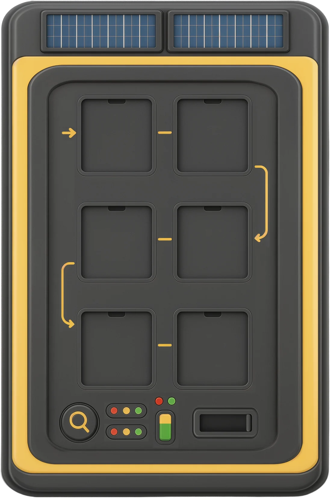

Klocek 7
Ułóż drogę butelki
Ułóż sześć kart — od rejestracji aż do oddania pełnej butelki. Przeciągnij kartę albo wybierz kartę i pole.
Bez limitu czasu. Każdą kartę możesz przestawić.

Prototyp klocka 7. Nie jest jeszcze podłączony do lekcji.
Klocek 7
Ułóż sześć kart — od rejestracji aż do oddania pełnej butelki. Przeciągnij kartę albo wybierz kartę i pole.
Bez limitu czasu. Każdą kartę możesz przestawić.
